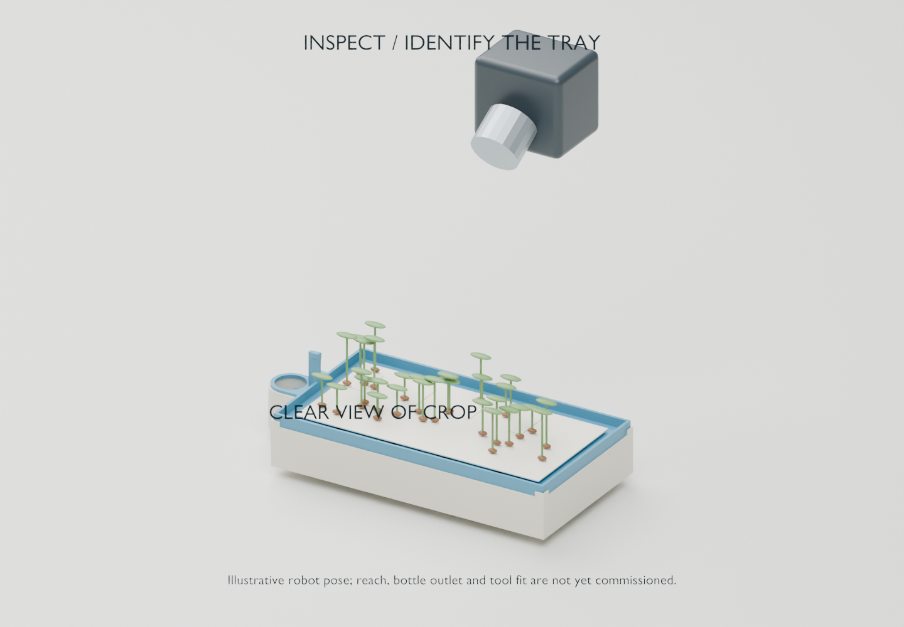
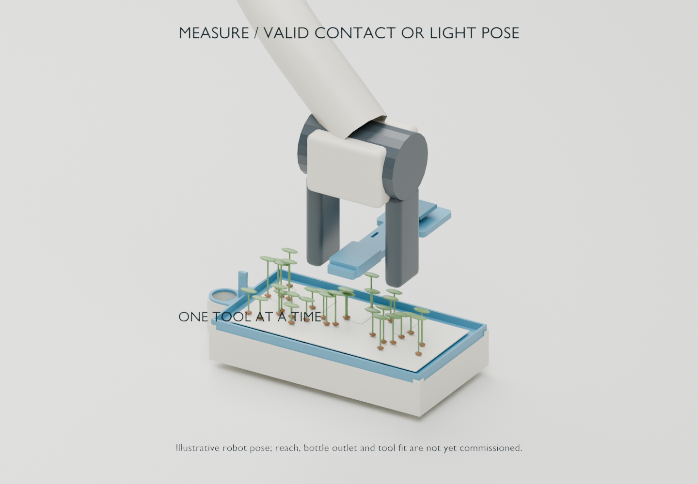
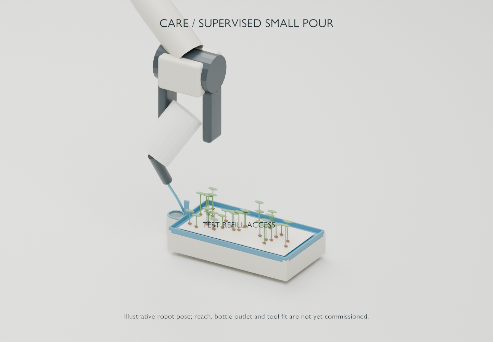
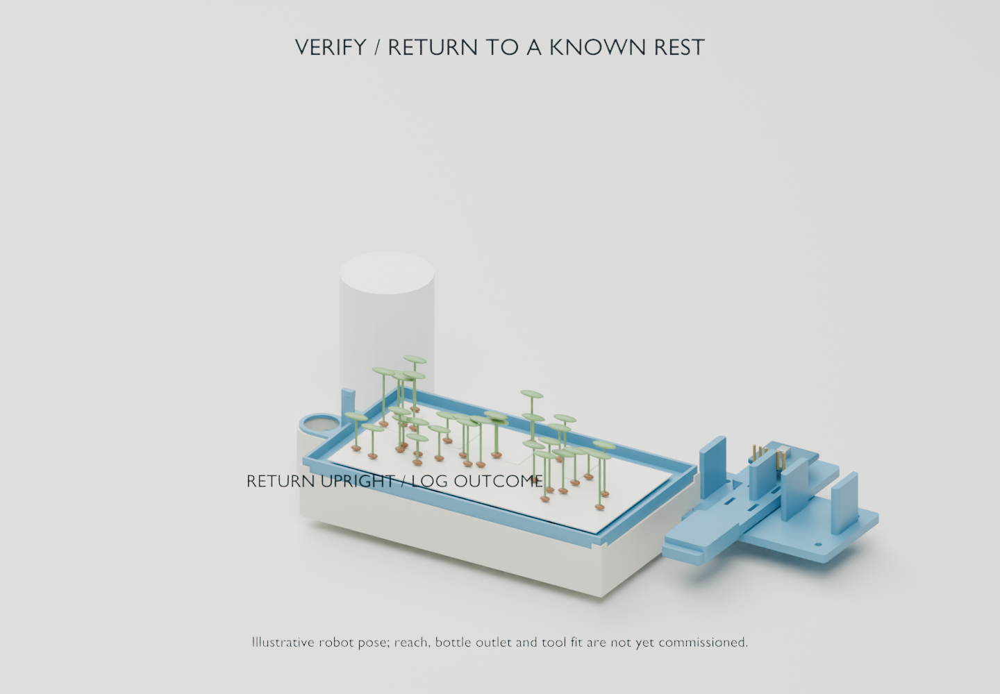

Before a pour
Correct tray identity, fresh camera view, valid measurement/contact, known small fill, verified bottle grip, clear reachable target and a tested upright recovery path. A cloud model cannot override any failed prerequisite.
FIELD GUIDE / SOFTWARE ROADMAP
The redline feedback becomes an observable, recoverable loop. These are proposed milestones; this site does not implement robot software.




Any unresolved condition pauses the cycle. On restart, reconcile the physical state before choosing an eligible next step.
The feedback’s pick/dock/weigh/dose/return sequence described a broader station design. In our bottle-and-in-place profile, pod handling is explicitly not applicable and scale/pump adapters stay disabled. If we later move pods, reinstate those states with independent grip/location evidence.
Correct tray identity, fresh camera view, valid measurement/contact, known small fill, verified bottle grip, clear reachable target and a tested upright recovery path. A cloud model cannot override any failed prerequisite.
A motion acknowledgement proves receipt, not water delivery. Record dose as estimated or human-attested unless independently measured. Unknown delivery pauses; never blindly repeat an uncertain pour.
{
"cycle_id": "...", "command_id": "...", "tray_id": "A",
"source": "simulation | hardware",
"recipe_version": "...", "time": "...",
"images": [{"id": "...", "captured_at": "..."}],
"readings": [{"value": 0, "unit": "raw_adc",
"validity": "INVALID_CONTACT", "calibration_id": "..."}],
"action": "water", "state": "INTENDED",
"delivery": "not_attempted | unknown | human_attested | measured",
"software_version": "...", "policy_version": "...",
"interventions": []
}SQLite plus image files is the proposed local record store. Command IDs alone cannot guarantee exactly-once physical watering. Preserve original images and keep simulation evidence distinct from hardware evidence.
| Window | Deliverable | Gate |
|---|---|---|
| Sep 22–24 | Capability profile, event schema, simulator, durable action records, initial exception viewer. Run the separate NY grow trial. | Interrupt every simulated state; no duplicate or uncertain repeat watering. |
| Sep 25–26 | Fault replay, sensor validity, camera spill cases, Jev shadow adapter. | Stale/hidden view, wrong identity, missing contact, uncertain grip, dropped ACK and cloud loss are handled. |
| Sep 27–29 | Freeze crop recipe, export/restore, offline rehearsal and packaging. | Recover evidence and resolve a defined exception through the viewer. NY seedlings remain with local care or are cleaned up. |
| Sep 30–Oct 2 · D1–3 | Hardware adapters, calibration, dummy-tray recovery, moving cable sweeps and small hand/teleop bottle pours. | Measure real fits, prove safe state-dependent stops and contact validity; do not infer delivered volume from tilt. |
| Oct 3–5 · D4–6 | Supervised parked cycles at every intended tray position; collect demonstrations once teleop is reliable. | All outcomes and interventions recorded. No unobserved watering authority. |
| Oct 6–8 · D7–9 | Feature freeze; progressive 2-hour, then 8-hour, then 24-hour observation/alert windows, with human watering arranged. | Relevant faults pass first. Autonomous watering requires a separate validated delivery/recovery profile. |
| Oct 9–10 · D10–11 | Repeat weak cases, restore backups, export dataset and caretaker handoff. | Caretaker can resolve representative exceptions. Navigation remains conditional. |
Dates are targets, not evidence of completion. A failed gate holds the previous operating level. The NY growing trial is newly in scope; earlier statements that no physical work happens until September 30 now apply to robot commissioning, not planter tests.
Jev categories: normal, needs reinspection, handling fault, watering discrepancy, crop concern and unknown. Begin in shadow mode with no actuation permission. The redline’s 0.85 heuristic is not a validated threshold, and the described helper source has not been audited here.
Compare rules and Jev on the same evidence: missed faults, false clearances, unnecessary alerts, review time, latency and cost. Independently label outcomes and hold out episodes from tuning. The suggested 120 labelled episodes / at least 10 per priority fault class is a starting collection target, not a reliability guarantee.
Astra may propose changes and experiments. Version and evaluate them before a bounded supervised trial; retain rollback. Automatic code modification/retraining and complex orchestration are deferred.
Camera spill status is CLEAR / SPILL / UNKNOWN. Hidden, dark, stale, glare-obscured or out-of-frame areas are UNKNOWN. Dedicated leak pads were removed at your request; vision remains experimental.
If a pour must stop, execute the commissioned return-upright action when control is available. Do not blindly release or de-energize a tilted bottle. Total power loss may leave it draining; small starting fills and household containment matter. Do not claim camera software alone prevents damage.
Every release replays accumulated failures. Hardware changes trigger the relevant real tests again. Mobile navigation, automatic refill, printer part pickup and construction tasks remain outside the first dependable parked loop.